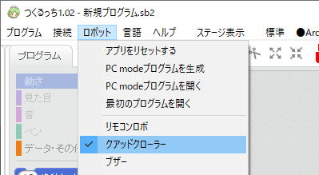
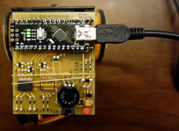

「つくるっち」ダウンロード＆説明
「つくるっち」は小学生から大人まで、プログラミング学習や電子工作を目的に開発したスクラッチ互換のプログラミング環境です。Windowsのみ対応です。 MIT LabのScratch2.0とMakeblock社のmBlock3を元に開発したGPLライセンスのオープンソースソフトウェア＆フリーウェアです。
- ダウンロードと実行
- プログラムの種類
- ロボットをつないでPC通信モードに設定 (プログラミングを始める)
- ロボットを最初のプログラムに戻す (プログラミングをやめるとき)
- プログラムをパソコンに保存、保存したプログラムを開く、プログラムを消す
- リリース履歴、ソースコード
ダウンロードと実行
- ダウンロードと展開
TuKuRutch.xxx.zipをダウンロードし、右クリックで[すべて展開]して下さい。
http://bit-trade-one.co.jp/forUser/TuKuRutch20200305.zip
http://sohta02.sakura.ne.jp/release/TuKuRutch.20200305.zip ※そーたメイサイト ミラー
zipファイルは約220MB、展開すると約550MBになります、パソコンのHDDの空き容量に注意して下さい。Windowsのみ対応です。

. - 展開したフォルダのAdobeAIRInstalleを実行して下さい。

- CH341SERを実行し、INSTALLを押して下さい（デバイスドライバインストール）。


- 「つくるっち」を実行。

本体FWの更新 (3/6追記)
- 「ロボット」-「クアッドクローラー」を選択

- クアッドクローラーを接続し、
 を押して下さい。赤線の部分が
を押して下さい。赤線の部分が
Normal: QuadCrawler1.1のときは最新FWです。
Normal: QuadCrawler1.0のときは本体FWを更新して下さい、[接続] - [ロボットを最初のプログラムに戻す] を実行して下さい。

プログラムの種類
-
ロボットにはあらかじめ「最初のプログラム」が書いてあり、ロボットは「最初のプログラム」で動いています。
自分のプログラムを動かすときは 「ロボットをスクラッチアプリにつないでPC通信モードに設定」して下さい。
プログラミングをやめ、ロボットで遊ぶときは 「ロボットを最初のプログラムに戻す」をしてください。プログラムの種類を調べるときは
 を押して下さい。
を押して下さい。 のように表示されます。
のように表示されます。 -
種類 の右の表示書き方 説明 最初のプログラム Normal: QuadCrawlerX.X [接続]-[最初のプログラム] 最初に書いてあるプログラム。
ロボットで遊ぶとき使うPC通信モード PC mode: QuadCrawlerX.X の右の表示を押す自分のプログラムを動かす。
パソコンが必要。Arduinoモード Arduino: QuadCrawlerX.X Arduino-アップロード 自分のプログラムを動かす。
アップロードが必要、パソコンが不要。
ロボットをつないでPC通信モードに設定 (プログラミングを始める)
プログラミングを始める準備をします。
- USB miniBケーブルでPCとロボットを接続。(microBケーブルは使えません)

- ロボットを選択する。
[ロボット] - [リモコンロボ] または [クアッドクローラー]
- 1. を押す
2.の右の文字を押す

ロボットを最初のプログラムに戻す (プログラミングをやめるとき)
-
「最初のプログラムに戻す」を実行しないとロボットで遊ぶことができません。
-
が緑になっていることを確認し、[接続] - [ロボットを最初のプログラムに戻す] を選択。
-

プログラムをパソコンに保存、保存したプログラムを開く、プログラムを消す
- プログラムを保存
「プログラム」「同じ名前で保存」を選び、てきとうな名前をつけてパソコンに保存します。そのままだとUntitled.sb2になります。

- 保存したプログラムを開く
「プログラム」「開く」を選び、プログラムを選びます。 - プログラムを消す
「プログラム」「全部消す」で全部消えます。

リリース履歴、ソースコード
-
日付 バージョン つくるっち 変更内容 2020/02/13 1.01 TuKuRutch.20200213.zip - 拡張ブロック定義 jsonファイルからPC通信プログラムを自動生成、世界初！（作者調べ）
- クアッドクローラーやその他ロボット、arduino基板対応
- デザインを大幅変更2020/01/08 1.0 TuKuRutch.RemoconRobo.20200108.zip 2019/07/15 1.0 RemoconRoboApp.zip
RemoconRoboFW.20190715.zip- アナログリモコン対応
- 直進補正対応
- MP3/JQ6500対応2018/07/30 - mBlock20180730.zip - 初リリース
- スクラッチアプリはMakeBlockのmBlock3をforkしたものです、GPLライセンスです。
ソースコード：https://github.com/sohtamei/mBlock/tree/V3.4.5